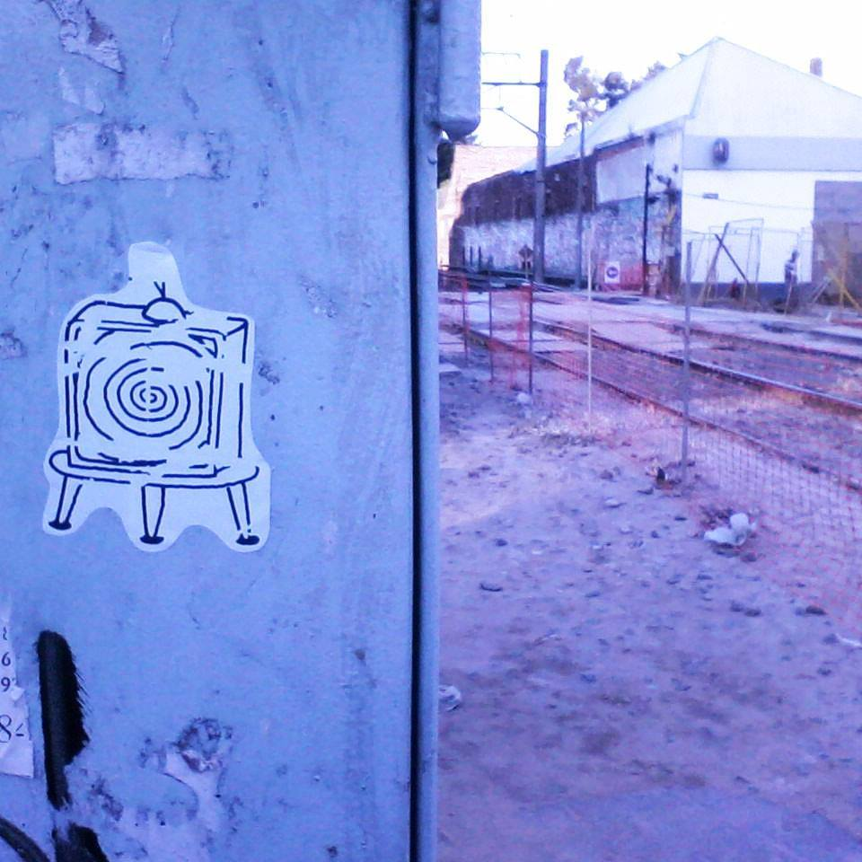

Que sigan ladrando...

Ladran Sancho busca visibilizar el trabajo de obreros visuales anónimos. Técnicas, ideales, preferencias y contextos. Encuentros, dialogos e intercambios con artistas emergentes del mundo que buscan romper la matrix y derribar las estructuras establecidas... o simplemente hacer de este planeta un lugar mejor.